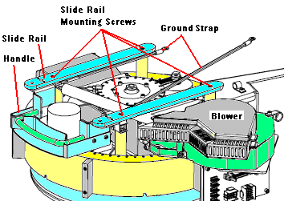
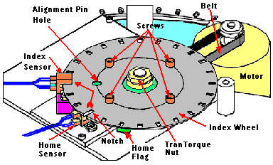
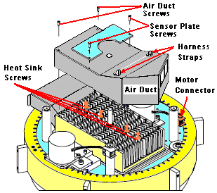
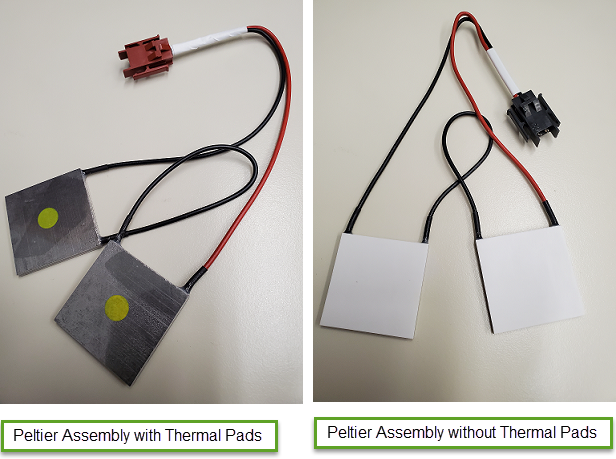
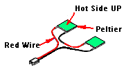
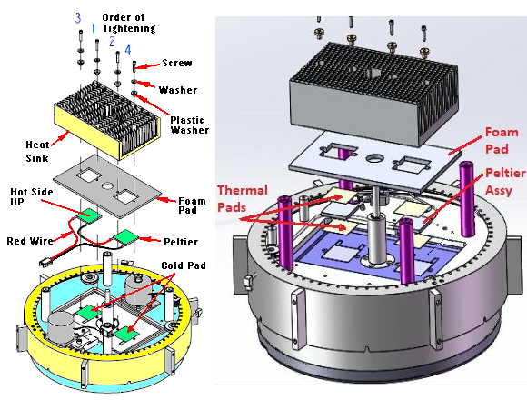
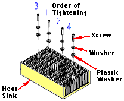
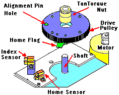
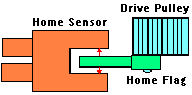
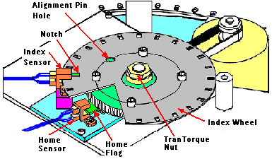

Replacing Peltier (Access 2)
This procedure describes how to replace the reagent carousel Peltiers in an Access instrument.
Required Materials:
- 1/4-in drive dial-indicating torque wrench 0-75 in·lb (0–9 N·m)
- 1/4-in drive 5/8-in socket for torque wrench
- 1/4-in drive 9/64-in hex bit for torque wrench,
- White thermal grease PN5033A
- Carousel alignment tool (3572B, 3352A, or a suitable Allen wrench)
Note:
- Always verify that the reagent carousel thermistor is not misreporting the temperature before replacing the Peltiers.
- Refer to the Troubleshooting Reagent Carousel Thermistor procedure. Verify power and continuity, and that both fans are operating.
- A good Peltier measures 5 to 6 ohms at room temperature.
-
Prepare the instrument.
- Remove any onboard reagent packs and store them in a refrigerated location.
- Power off the instrument.
- Remove the upper and lower front panel from the instrument.
-
Remove these connectors from the carousel module interface PCB:
- J1 - Ribbon cable
- J12 - Vacuum valve
- J16 - Temperature harness
- J18 - Power harness
- J20 - Fan
Note: Refer to the PCB - Sample / Reagent Carousel Interface document. - Remove the two screws securing the carousel module to the analytical unit baseplate, and carefully slide the module out of the instrument.
-
Set the carousel module on the work area and remove the reagent carousel cover (four screws).
Note: Place towels on the work area where the carousel module will be placed to absorb residual moisture that can drain out onto the work area. If necessary, invert the module over a sink to drain any condensation.
-
Insert the carousel alignment tool into the alignment hole in the reagent carousel at position 3. Rotate the carousel until the tool drops into the alignment hole and into the housing.
Note:
- When the alignment tool is seated, carousel position 1 is near the pack loading position.
- Hold or secure the tool in place or it falls out when the module is inverted.
-
Disassemble the module for access to the Peltiers.
-
Invert the module, and then remove the two slide rails (four screws).

Note: Leave the handle and ground straps attached to the rails. -
Remove the index wheel from the reagent carousel drive pulley (four screws).

- Remove the index wheel from the reagent carousel drive pulley (four screws).
-
Insert the reagent carousel alignment tool into the alignment hole in the drive pulley. Rotate the pulley so that the tool drops into the hole in the sensor mounting plate.
Note: The tool engages the alignment hole when the home flag on the pulley is in the home sensor.
-
With the alignment tool in place, loosen the 5/8-in trantorque nut until the drive pulley is loose on the shaft.
Note:
- Use only a 5/8-in wrench or socket for loosening the trantorque nut to prevent rounding-off of the corners of the nut.
- The trantorque nut requires initial force to loosen. After being rotated 1/4 turn, the trantorque nut will require more force to break loose. If the trantorque nut does not loosen, refer to the separate procedure for working with a frozen trantorque nut. Refer to the Disassembling and Reassembling Carousel Module with Frozen Trantorque Nut procedure.
-
Remove the alignment tool from the drive pulley. Rotate the pulley so that the home flag clears the home sensor, and then slide the pulley off the shaft.
Note: Leave the trantorque nut in the pulley. It falls apart if removed, and then must be reassembled.
-
Invert the module, and then remove the two slide rails (four screws).
-
Remove the Peltiers.
-
Disconnect the reagent carousel drive motor connector, and remove the harness from the straps on the air duct.

- Remove the sensor mounting plate (two screws).
- Remove the two air duct screws, and slide the air duct off the heat sink.
- Loosen the four heat sink mounting screws, and then remove the heat sink from the module.
- Clean all the dust and debris out of the heat sink, the fan, the fan shroud, and the air duct.
-
Remove the Peltier assembly and foam pad.
Note: The Peltiers may seem glued to the cold pads on the reagent carousel housing. Try to twist them off. If twisting them off is unsuccessful, pull on the wires or use a screwdriver against the edge of the Peltier. Do not damage the area beneath the Peltiers.
-
Disconnect the reagent carousel drive motor connector, and remove the harness from the straps on the air duct.
-
Install the Peltiers.

-
If new heat sink thermal grease compound is available, or using thermal pads, then remove old thermal grease from the bottom of the reagent carousel housing and from the heat sink by scraping with a single-edge razor blade and wiping with paper towels, otherwise use the existing thermal grease to coat the new Peltiers.
Caution: Ensure that the metal surfaces where the Peltiers will be mounted are not damaged and that there are no particles or debris on the Peltier contact area.
-
Apply a thin, even coating of thermal grease (approximately 0.001 in thick) to the cold side of the Peltiers that will be in contact with the reagent carousel housing. Do not apply thermal grease to thermal pads.

Note:- Do not over apply the thermal grease compound or get the grease on the edges of the Peltiers. Thermal grease on the edges conducts heat from the cold side to the hot side and decreases Peltier performance.
- If installing the Peltier assembly with thermal pads, then remove the plastic covers on the peltiers before placing onto reagent carousel housing.
-
Place the Peltier assembly onto the reagent carousel housing with one Peltier on each cold pad. Ensure that the red wire is oriented so that the hot side of the Peltier is up.
Note:
- Ensure that there are no particles or debris on the Peltier contact areas.
- If the Peltiers are installed upside down, the reagent carousel will get hot and the heat sink will get cold.

- Move the Peltiers back and forth slightly, while pushing down, so that the Peltiers are seated well.
- Apply a thin, even coat of thermal compound to the hot side of the Peltier. Do not apply thermal grease to thermal pads.
- Place the foam pad onto the reagent carousel housing. Position the wires into any depressions in the foam pad.
-
If new heat sink thermal grease compound is available, or using thermal pads, then remove old thermal grease from the bottom of the reagent carousel housing and from the heat sink by scraping with a single-edge razor blade and wiping with paper towels, otherwise use the existing thermal grease to coat the new Peltiers.
-
Install the heat sink.
-
Insert the four screws, washers, and plastic step washers through the holes in the heat sink.

- Place the heat sink over the Peltiers so that the screw holes in the heat sink are aligned with the holes in the reagent carousel housing.
- Lightly install the heat sink mounting screws. Using the torque wrench with a 9/64-in hex adapter, tighten screws 1 and 2 (the inside screws) to 5 in·lb, and then tighten screws 3 and 4 (the outside screws) to 5 in·lb.
- Repeat the previous step, but increasing the torque to 10 in·lb, and then to 20 in·lb.
-
Verify that all four screws are tightened to 20 in·lb.
Note: Over-tightening or under-tightening the heat sink mounting screws can cause premature failure of the Peltiers assembly.
-
Insert the four screws, washers, and plastic step washers through the holes in the heat sink.
-
Assemble the remainder of the reagent carousel.
- Connect the Peltiers power connector.
- Install the air duct using the two shorter screws.
- Install the home and index sensor mounting plate using the two longer screws.
- Reconnect the reagent carousel drive motor connector and place the harnesses in the harness straps on the air duct.
-
Place the reagent carousel drive pulley and trantorque nut onto the reagent carousel shaft. Rotate the trantorque nut 2 or 3 turns until the nut begins to tighten. Do not torque the trantorque nut yet.

-
Install the drive belt onto the reagent motor pulley and then onto the drive pulley.
Note: If necessary, adjust the belt tension by loosening the two motor mounting plate screws, pulling the motor away from the drive pulley until the belt is snug, and then tightening the two screws.
-
Align the critical parts.
-
Insert the carousel alignment tool into the alignment hole in the reagent carousel at position 3. Rotate the carousel until the tool drops into the alignment hole in the housing.
Note:
- When the alignment tool is seated, carousel position 1 is near the pack loading position.
- Hold or secure the tool in place or it will fall out when the module is inverted.
-
Invert the module. Insert the drive pulley alignment tool into the reagent carousel drive pulley. Rotate the pulley until the tool drops fully into the alignment hole in the sensor mounting plate.
Note:
- When the alignment tool is seated, the home flag on the drive pulley is inside the home sensor.
- If needed, loosen the sensor mounting plate screws to aid tool insertion, and then retighten them.
- Pull on the drive pulley so that the home flag is held lightly upward against the home sensor, and then tighten the trantorque nut.
-
Check that the up-down position of the home flag is vertically near the center of the home sensor, and then torque the nut to 60 in·lb. The drive pulley moves downward slightly as the trantorque nut is tightened.
Tip: To keep the home flag centered within the home sensor, you can use feeler gauges between the pulley and the base frame as you tighten the trantorque nut.

Note:- Overtightening the trantorque nut can cause the nut to freeze to the reagent carousel shaft becoming unremovable.
- After the nut is torqued, the home flag should be vertically near the center of the sensor so that the flag will not jam or rub on the sensor when in operation.
- Remove the drive pulley alignment tool.
-
Insert the carousel alignment tool into the alignment hole in the reagent carousel at position 3. Rotate the carousel until the tool drops into the alignment hole in the housing.
-
Complete the reassembly and installation of the carousels module.
-
Install the index wheel (correct side up) onto the carousel drive pulley so that hole in the index wheel matches the alignment hole in the drive pulley (four screws).

Note:- The index wheel is correct side up when the home flag is in the home sensor and the notched slot in the index wheel is in the index sensor.
- If the index wheel is installed upside down on the pulley, then the reagent pack alignment offset is approximately 60 steps after assembly.
- Install the slide rails (four screws).
- Invert the module, remove the carousel alignment tool, and install the reagent carousel cover.
- Mount the carousels module into the analyzer (two screws).
-
Reconnect the cables to the interface PCB.
- J1 - Ribbon cable
- J12 - Vacuum valve
- J16 - Temperature harness
- J18 - Power harness
- J20 - Fan
Note: Refer to the PCB - Sample / Reagent Carousel Interface document.
-
Install the index wheel (correct side up) onto the carousel drive pulley so that hole in the index wheel matches the alignment hole in the drive pulley (four screws).
-
Verify the operation of the Peltier assembly.
- Power on the instrument.
-
Verify the pipettor alignments to the reagent carousel and the sample carousel.
Note:
- Refer to the Pipettor Alignment / Adjustment procedure.
- Software does not save an alignment offset greater than 15 steps. If the alignment is out of range, remove the reagent carousel. Realign the drive pulley or move the reagent index sensor in the correct direction to cancel the offset, and then recheck the alignments.
- Moving the index sensor too far away from the home sensor can cause the carousel to home incorrectly. Home occurs when the index sensor sees the next index flag cut-out in the index wheel after the home flag is in the home sensor.
-
In the user interface, reload the reagent packs into the reagent carousel.
Caution: Unload all packs from the user interface, and then reload the packs to ensure that the packs are placed into the correct locations on the wheel. Do not replace reagents in incorrect locations or using a list of which slot they should be placed into.
-
Verify that the reagent carousel temperature on the Temperature/Voltage Status screen is within the acceptable range of +1 °C to +5 °C.
Note: Under normal startup conditions, the reagent carousel temperature is within the acceptable temperature range within 30 minutes.